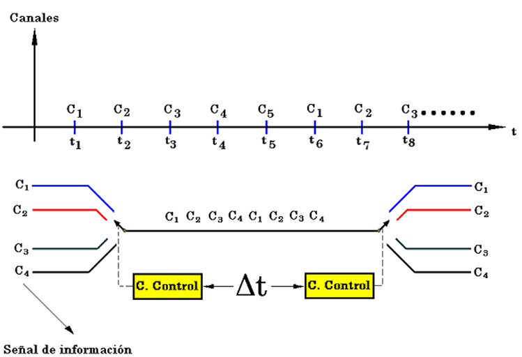
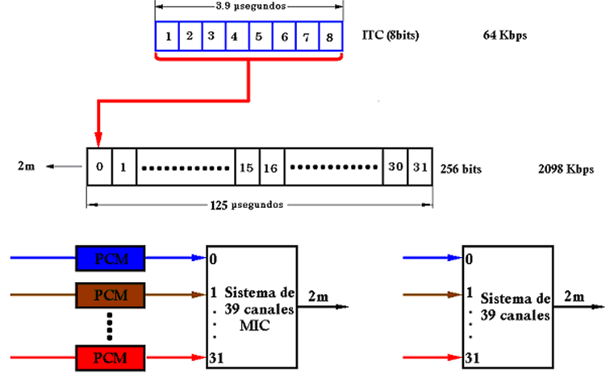
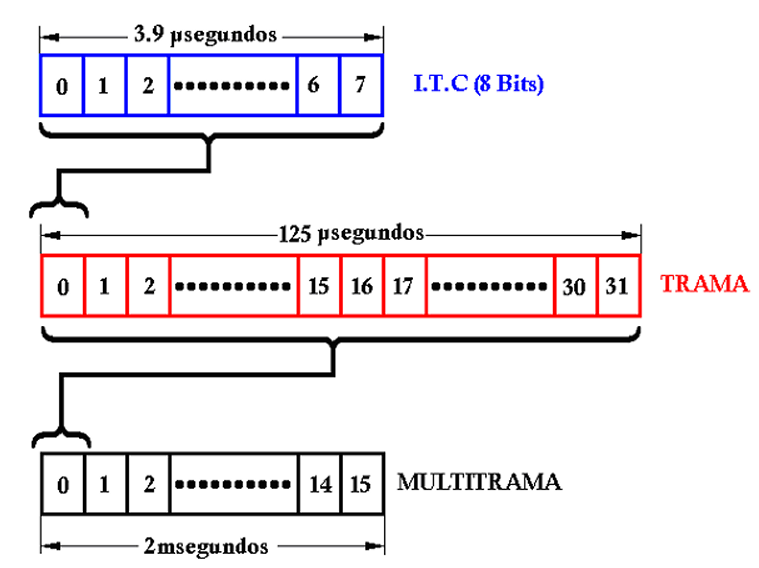
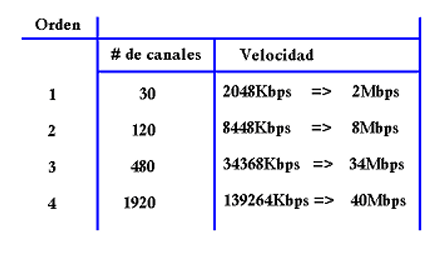
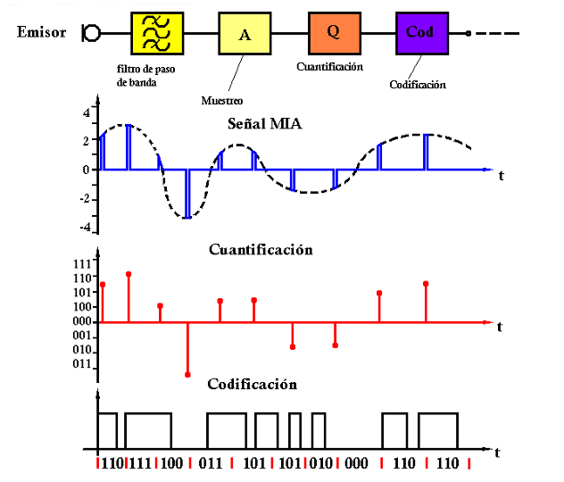
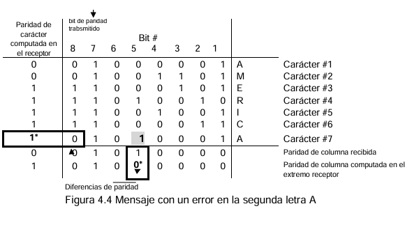

Un canal→ I.T.C. (Intervalo de Tiempo de Canal) → 8 bits
Existen dos tipos de codificación por canal:
TDM (Multiplexación por División de Tiempo).
PCM (Múltiplexación por División de Pulsos) MIC en español.
Video Informativo
TDM (Multiplexación por División de Tiempo).
Consiste en asignar todo un ancho de banda a una determinada señal durante un intervalo de tiempo.

Multiplexado MIC
Hace referencia a que se combina con la señal MIC o PCM, con lo que forma una salida multiplexada digital.
Multiplexado de la señal digital.
Agrupa señales de entrada, de baja velocidad binaria en una señal digital con velocidad binaria alta.
Sistemas de 30 Canales (E1).
Cada intervalo de tiempo de canal tiene 8 bits.
Tiene 30 canales para transmitir información.
Tiene 1 canal para transmitir señales de sincronización (bit 0).
Tiene 1 canal para transmitir señalización (bit 16).
A cada canal se le asigna un intervalo de tiempo de canal (I.T.C.)

SISTEMA DE 32 CANALES
Tenemos 32 intervalos de tiempo de canal (I.T.C), de los cuales 30 se utilizan para transmitir información y 2 intervalos se utilizan para transmitir información del sistema.
La Multitrama tiene 512 canales y 4.096 bits.
Tiene 480 canales de información
Tiene 16 canales de sincronización .
Tiene 16 canales de señalización.
Tiene 3.840 bits de La trama tiene 32 canales y en cada una de ellas 8 bits

TÉCNICAS DE MULTIPLEXACIÓN Y ACCESO MÚLTIPLE
SISTEMA TDM (MÚLTIPLEXACION POR DIVISIÓN DE TIEMPO)
A cada señal se le asigna un cierto intervalo de tiempo (para transmitir)
Normalizamos los tiempos para a cada señal se le asigne el mismo. Para un sistema E1 tenemos:

SEÑAL FDM (MÚLTIPLEXACION POR DIVISIÓN DE LA FRECUENCIA)
La multiplexación por división de frecuencia permite paralelizar señales de datos en todo un ancho de banda utilizable.
Las frecuencias de "guardarraíl" se utilizan como espacios entre señales de datos adyacentes para evitar la distorsión.
La mejora de la ortogonalidad de las señales portadoras puede desbloquear más ancho de banda para la transmisión de datos.
Ventajas
Las señales envían datos de forma continua
Flujo de información dúplex completo
Funciona para analógico y digital
Desventajas
Los problemas de comunicación en un canal pueden afectar a otros
Problemas de optimización: un canal puede estar ocupado mientras otro está inactivo
Cada línea de comunicación requiere su propia frecuencia
Multiplexación por división de longitud de onda (WDM)
Técnica de multiplexación analógica que combina señales ópticas. La principal ventaja de este formato es la alta capacidad de velocidad de datos de los medios de comunicación óptica, pero requiere componentes relativamente complejos con mayores costos iniciales y peor confiabilidad.
Multiplexación por división de tiempo (TDM)
El equivalente en el dominio del tiempo de FDM que divide una línea de comunicación y una frecuencia portadora con intervalos de tiempo más pequeños. Dependiendo del método de temporización, TDM puede funcionar tanto de forma sincrónica como asíncrona, donde la primera asegura tramas de división de tiempo iguales y la segunda utiliza tramas que optimizan la eficiencia del ancho de banda.
Multiplexación por división de código (CDM)
El enfoque de multiplexación menos restrictivo permite la transmisión simultánea en todo un espectro de frecuencias. La base de CDM es la ortogonalidad de los vectores: al asignar a los emisores un código único de vectores ortogonales, una sola transmisión puede codificar múltiples objetivos en una sola transmisión.
SISTEMA MIC
La señal MIC modulada en amplitud y considerada hasta este momento es todavía una señal analógica; precisamente con un proceso de cuantificación se convertirá en una señal digital. Durante el proceso de cuantificación se asignan a los impulsos de amplitud de la señal MIA un número limitado de intervalos de cuantificación discretos. Para ello se dividen el margen de amplitudes de la señal en una cantidad igual de intervalos.

En el caso de que un valor de amplitud se encuentra situado entre los limites de un intervalo, se le asignara a este valor mencionado. En el punto de recepción y para que el error de cuantificación permanezca lo menor posible, se reproduce este valor con un valor analógico que esté situado en la mitad (en el centro) de este intervalo de cuantificación. Por codificación se sobre entiende un convenio por el cual cada uno de los intervalos individuales se enumeran correlativamente con el código binario apropiado. La secuencia de muestreo, cuantificación y codificación se resume bajo el concepto general de conversión analógica-digital (A/D).
CARACTERÍSTICAS
CONVERSIÓN DE POLARIDAD.
Para transmitir necesitamos pulsos bipolares (positivo y negativo), por eso los pulsos binarios los pasamos a un código binario de transmisión.
REGENERACIÓN.
En los equipos MIC, la señal que se transmite sufre distorsiones, variaciones por el ruido a lo largo del medio de transmisión, en el trayecto se ubican repetidores o regeneradores.
SINCRONIZACIÓN.
Al hablar de sistema MIC es importante hablar de sincronización. En este sistema se trabaja con circuitos digitales que están sincronizados, o sea tienen una señal de reloj
Repetidor Pasivo.
Capta la señal, no verifica, solamente amplifica la señal para
transmisión en una distancia determinada.
Repetidor Activo
Analiza la señal, si puede eliminar el ruido, no retransmite si tiene demasiados errores, envía un mensaje al transmisor luego de analizar retransmite amplificando, también no puede transmitir cuando existe demasiados bits de error
Sincronización de dígito o bit.
Se refiere a lo que es la sincronización del generador de la señal de reloj necesario para el codificador tanto en el transmisor como en el receptor.
Sincronización Interna.
La información de la señal de reloj se transmite en los pulsos de la señal MIC.
Sincronización Externa
La señal de reloj se transmite vía independiente de la
señal MIC.
Videos informativos
PROTECCIÓN DE LOS DATOS: CONTROL DE ERRORES.
PROTECCIÓN DE LOS DATOS.
Los datos, cuya utilidad radica en su integridad y en su confidencialidad, están sujetos a dos tipos de amenazas:
DETECCIÓN DE ERRORES.
Redundancia
Codificación de cuenta exacta.
Chequeo de paridad vertical (VRC)
Chequeo de paridad horizontal (LRC).
Chequeo de paridad bidimensional (VRC/LRC).
Checksum
Chequeo de redundancia cíclica (CRC)
CHEQUEO DE PARIDAD VERTICAL Ó PARIDAD DE CARÁCTER (VRC).
Este método, como todos los que siguen, hace uso del agregado de bits de control. Se trata de la técnica más simple usada en los sistemas de comunicación digitales (Redes Digitales, Comunicaciones de Datos) y es aplicable a nivel de byte ya que su uso está directamente relacionado con el código ASCII.
Como se recordará, el código ASCII utiliza 7 bits para representar los datos, lo que da lugar a 128 combinaciones distintas. Si definimos un carácter con 8 bits (un byte) quedará un bit libre para control, ese bit se denomina bit de paridad y se puede escoger de dos formas: ✓ Paridad par ✓ Paridad impar
Chequeo de paridad bidimensional (VRC/LRC).
La combinación de los dos métodos precedentes proporciona mayor protección y no supone gran consumo de recursos y, aunque tiene la misma sencillez conceptual de los métodos de paridad lineal, es más complicado y por ello menos popular.
El uso simultáneo de VRC y LRC hace que pasen indetectados errores en un número par de bits que ocupan iguales posiciones en un número par de caracteres, circunstancia muy poco probable.
Con esta información el MSC debe de tomar la decisión relativa a que celda vecina observa mejor al canal xxx.
Evidentemente, el nivel observado por las celdas vecinas debe de ser mejor al nivel de la celda actual

CÓDIGO DE REDUNDANCIA CÍCLICA.
Los métodos basados en el uso de paridad son sencillos de comprender y de implementar, suministran cierto grado de protección contra los errores, pero son limitados y su efectividad es cuestionable en determinadas aplicaciones.
Detección más segura de los errores. Dado que los datos se envían en bloques un solo error corrompe toda la información contenida en él, que es considerable, además muchas veces los errores se presentan en “ráfagas”, por ello se requieren esquemas más poderosos
Eficiencia. No se deben consumir demasiados recursos dejando libre la mayor parte del canal para datos.
SEÑALIZACIÓN
Se lleva a cabo mediante un flujo de datos de 10 kbps que se transmite sobre los canales de control y también sobre los canales de voz.
Para su transmisión dicho flujo binario es modulado mediante el esquema de modulación FSK (Frequency Shift Keying).
TÉCNICAS PARA SEGURIDAD DE DATOS.
La seguridad de los datos se complica debido a que cuando se hace una copia de la información en una computadora la información no es alterada ni destruida. Por lo tanto, descubrir esta clase de hurto de información es muy difícil.
Revisión del Personal
Para evitar el acceso de personas no autorizadas a la
información, se debe decidir primero quien está autorizado al acceso de la información y a
qué clase de información.
Seguridad Física
Se refiere a los métodos de “boxing out” para evitar el fisgoneo. La
medida más directa debe ser el de asegurarse de mantener los computadores y los
terminales en áreas de acceso controlado. Esto reduce grandemente la oportunidad de
que alguien haga una visita no autorizada a los datos y haga una copia por sí mismo.
Validación de Acceso:
Dado que hay un número de personas con acceso al sistema se
debe mantener una clase de control, ya que no todos los usuarios tienen la misma
necesidad de información, por lo que deben ser implementadas bases de datos
segmentadas y passwords (contraseñas).
Passwords
Permiten que los terminales y computadores den acceso a cierta clase de
información permitida previo conocimiento del respectivo password. Deben ser cambiados
frecuentemente para mayor efectividad.
Sistemas de Call-Back
La mayoría de los sistemas de computadoras que pueden ser
accedidos por línea telefónica son vulnerables a Break-ins por parte de un llamador
anónimo.
Codificación
Si no se puede mantener los datos fuera del alcance de manos no
autorizadas, lo mejor que sigue es realizar una transmisión disfrazada. Una forma de
realizar esto es codificar los datos de manera que parezcan sin sentido a los ojos del
ladrón de datos.
BIBLIOGRAFÍA
F. Mazda, Cellular Radio STelecommunications Engineer's Reference Bookystems, 1993.
G. Rodríguez, «SISTEMA AMPS,» 2015. [En línea]. Available: http://www.spw.cl/05mar07_mobile/Material_moviles/amps.pdf.
W. Tomas, Advanced Electronic Communications Systems, New Jersey: Pearson, 2004.